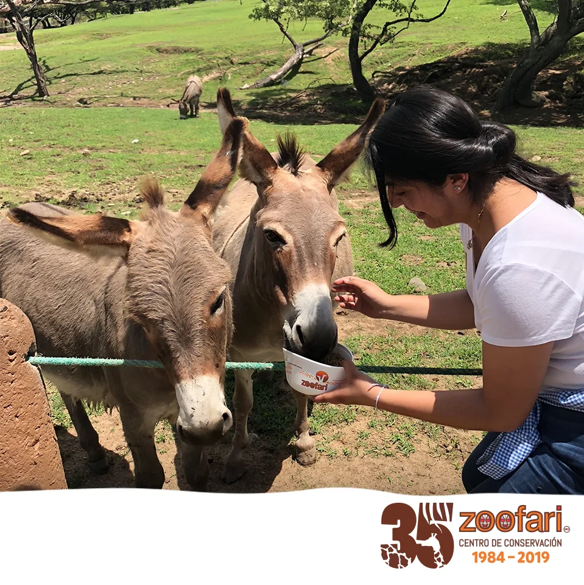

|
| zoofari |
Inicio | ¿Que asemos? | Contactanos | Eco tips |
Todo comenzó en 1984, cuando Zoofari nace como un espacio dedicado a la conservación y preservación de la naturaleza y animales silvestres, con la misión de permitir a nuestros visitantes, es decir a ti, el contacto cercano con cada especie, generando lazos afectivos y aprendizaje; así como participar en investigaciones y esfuerzos de conservación y reproducción controlada de especies. Es por ello que día a día dirigimos nuestros esfuerzos a fomentar el cuidado y respeto entre todas las especies que coexistimos en el planeta tierra. Queremos que este cariño que nos mueve, tenga un impacto positivo en cada par de ojos y manos que nos visitan a diario. En 35 años, nuestro propósito no ha cambiado y nos enorgullece que así sea. Que la magia de vivir historias diferentes cada día, de ver rostros nuevos, de escuchar risotadas o murmullos de asombro, sigan alimentando el corazón de nuestro centro de conservación.
Burro trabajo exexibo: Entre las causas que alertan la desaparición de esta especie se encuentra la falta de cuidados básicos, puesto que, al ser dejados de lado, carecen de alimentación, atención médica y cariño. A esto se le suma que, en algunos casos, son víctimas de abusos en los que tienen que aguantar trabajos forzados y golpes..

Oso polar Calentamiento global En 2015, se firmó el Acuerdo de París para limitar el calentamiento antropogénico a un máximo de 2 ° C. Si sus signatarios lo ratifican y respetan, podría ayudar en gran medida a proteger tanto a los osos polares como a los humanos del derretimiento del hielo y el aumento del nivel del mar. ¿Imaginas el polo Norte sin hielo? Puede que un día lleguemos a ver un verano sin hielo en el polo Norte. El hielo refleja la radiación solar, y si desaparece, las nuevas aguas al descubierto del mar absorberán más calor y el calentamiento global se acelerará en todo el planeta.

Lémures Un grito de ayuda Solo queda el 10% de los bosques históricos de Madagascar, los cuales sustentan a estos lémures en peligro crítico. Con una gran pasión por el néctar, se cree que los lémures son los polinizadores más grandes del mundo. A diferencia de la mayoría de los primates, dan a luz a grandes camadas, por lo que prosperan en cautiverio, donde las tasas de supervivencia son altas. Pero debido a que han sido criados a partir de un grupo genético muy pequeño, las reintroducciones posteriores entrañan muchas complicaciones . Su conservación se logrará cuando simplemente los dejemos en paz en un dosel de selva virgen.

Mandril Colores verdaderos El estilo lo es todo cuando vives en un grupo tan grande como el de un mandril. Con una tropa de 1.300 ejemplares una vez registrada en los bosques de Gabón, se cree que los mandriles forman los grupos sociales más grandes de primates no humanos. Con sus llamativas caras y ojos, han evolucionado para exhibir la coloración más espectacular de cualquier especie de mamífero, cuya intensidad indica su estado social y sexual. Lamentablemente, no es solo su apariencia lo que es atractivo. La carne de mandril se considera un manjar en el oeste de África, y es parte de un comercio en crecimiento, con toneladas de carne de animales silvestres introducidas de contrabando en el oeste de Europa a diario. Debido a que los mandriles viven en grupos tan grandes, gran parte de su población puede caer en el comercio en auge en una sola cacería. La tala y la agricultura también están limitando sus lugares de refugio, por lo que estos notables animales necesitan urgentemente una protección más eficaz.

Monos de nariz chata de Yunnan El mono misterioso Los científicos descubrieron los monos de nariz chata de Yunnan en la década de 1890, no obstante luego se desvanecieron en la oscuridad, y se creía que se habían extinguido hasta que se descubrió otro en 1962. Se trata de unos de los primates más esquivos de la Tierra. Son seminómadas y viven en altitudes más altas que cualquier otro mono, en los espesos matorrales de bambú de las montañas Hengduan en el sudoeste de China. Al igual que sus primos de pelo dorado, enfrentan temperaturas invernales de menos -40 ° C, y tradicionalmente son venerados por la población local por su resistencia. Esta los ve como antepasados y los llaman "hombres salvajes de las montañas". Si China aplica efectivamente su protección de los bosques antiguos, el futuro de los monos de nariz chata de Yunnan mejorará significativamente, no obstante los altos niveles de endogamia seguirán siendo una amenaza seria. Las poblaciones supervivientes son tan pequeñas y están tan aisladas en la actualidad que es posible que no tengan suficiente diversidad genética para medrar en los próximos siglos.